Lugares De Interés
Lista de los datos históricos y argumentales más importantes de cada zona de la ciudad submarina. Tocá el nombre de cada lugar para ver su información.
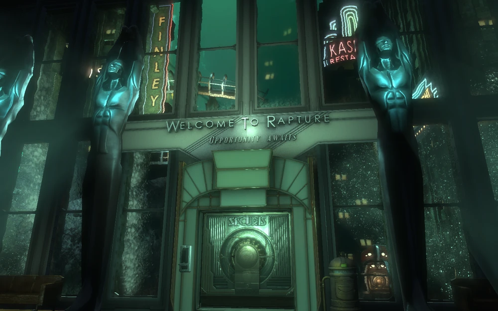
- Es el punto de entrada a la ciudad a través del faro de la superficie.
- Tiene el famoso cartel con la frase fundacional de Andrew Ryan: "No Gods or Kings. Only Man".
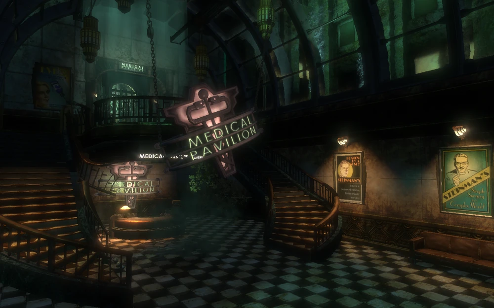
- Originalmente era el centro de salud, odontología y cirugías estéticas de alta gama.
- Cayó en la ruina y la locura bajo el control del Dr. J.S. Steinman, quien usaba los plásmidos para desfigurar y operar horriblemente a sus pacientes.
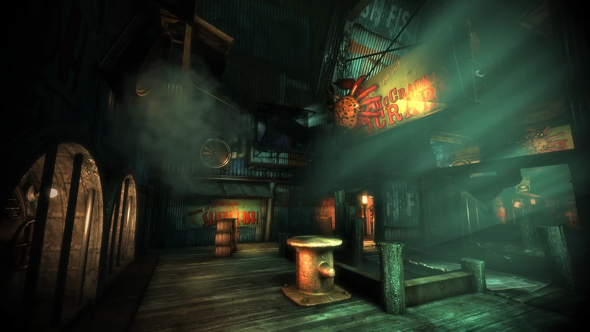
- El puerto pesquero, muelle y centro de distribución de mariscos de la ciudad.
- Se convirtió en la base de operaciones de Frank Fontaine para el contrabando ilegal de objetos de la superficie.
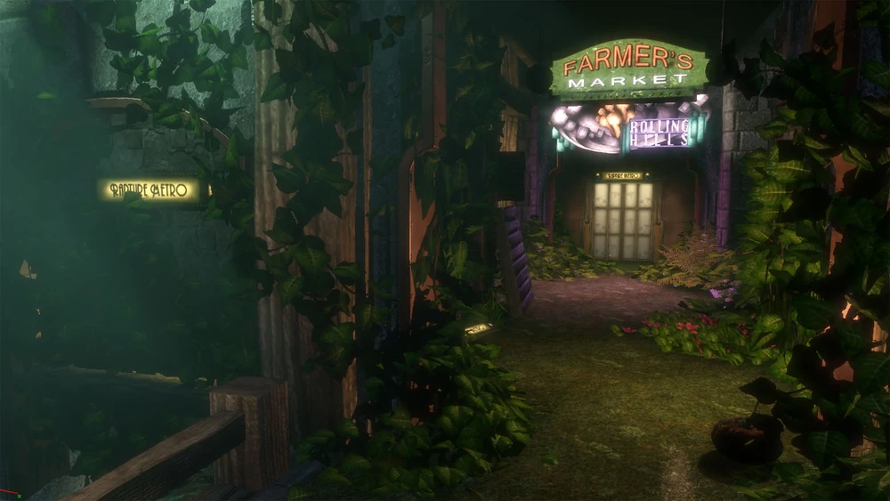
- Un gigantesco bosque artificial e invernadero hidropónico encerrado bajo cúpulas de vidrio.
- Es el pulmón verde de Rapture; fue creado por la científica Julie Langford para generar todo el oxígeno de la ciudad.

- El distrito comercial de lujo, teatros, tiendas de ropa y galerías de arte.
- Quedó completamente aislado del resto de la ciudad bajo el control dictatorial y psicópata de Sander Cohen, el artista más famoso de Rapture.
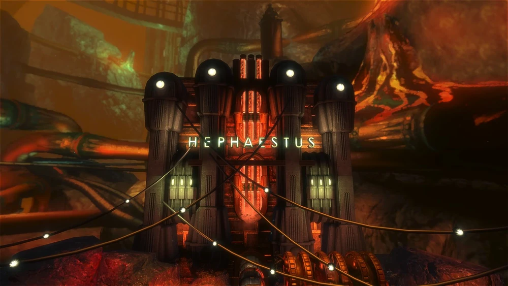
- La planta central de energía geotérmica que aprovecha el calor de las fosas oceánicas para dar luz y electricidad a toda la ciudad.
- Aquí se encuentra la oficina principal y el búnker de control de Andrew Ryan.

- Un barrio residencial originalmente destinado a la clase trabajadora de la ciudad.
- Durante la guerra civil, Ryan lo transformó en un gueto y campo de concentración fortificado para encerrar a los disidentes políticos.
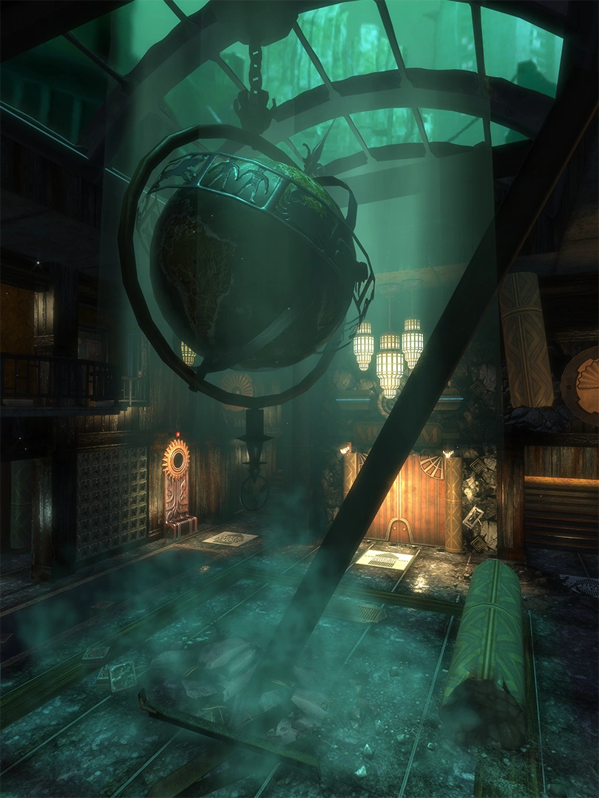
- El complejo de laboratorios científicos avanzados de Fontaine Futuristics.
- Fue el lugar exacto donde se descubrió el ADAM, se fabricaron los plásmidos comerciales y se creó el proceso de conversión para los Big Daddies y las Little Sisters.
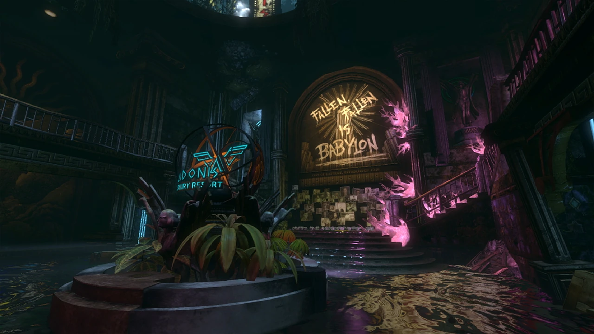
- Un hotel y balneario termal de altísimo nivel construido al borde de la fosa marina para la élite de la ciudad.
- Es el lugar donde despierta el protagonista (Subject Delta) tras pasar diez años inconsciente.
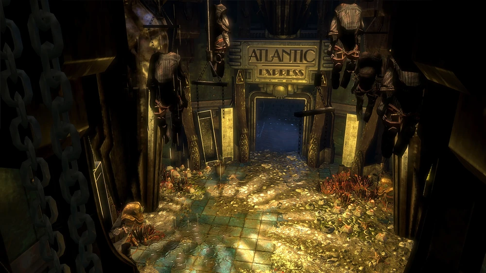
- La estación central de trenes y la red de ferrocarriles submarinos que conectaban las zonas industriales.
- Era el principal medio de transporte de carga y pasajeros antes de que la guerra civil destruyera las vías.
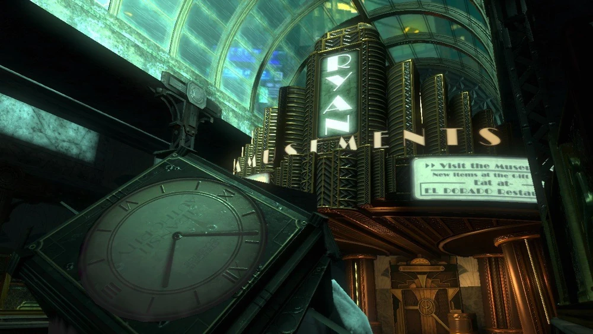
- Un parque de atracciones y museo propagandístico diseñado personalmente por Andrew Ryan.
- Su objetivo era adoctrinar a los niños de la ciudad para que le tuvieran miedo a la superficie y odiaran a los "parásitos" del mundo exterior.
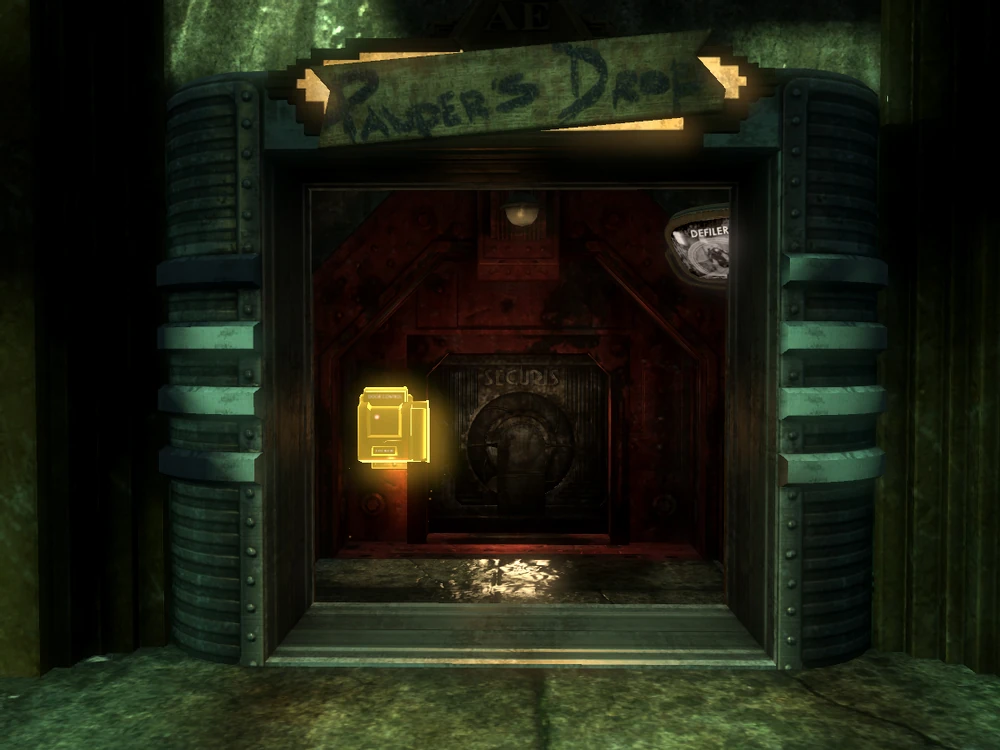
- Un barrio marginal, hacinado y decadente construido en los callejones traseros de la infraestructura del tren.
- Se formó con la gente pobre y desamparada que fracasó económicamente dentro del sistema capitalista salvaje de Ryan.
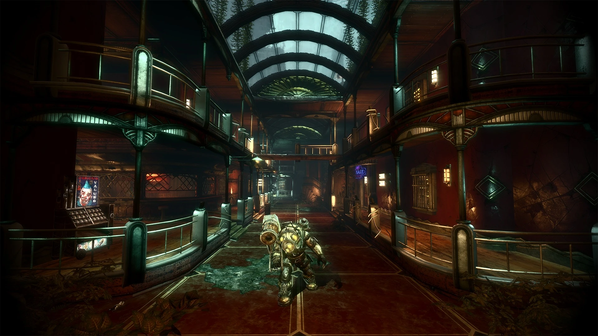
- El antiguo distrito de entretenimiento nocturno, tabernas y burdeles destinado a los obreros y arquitectos.
- Quedó completamente inundado tras los sabotajes de la guerra civil, obligando a transitarlo con trajes de buzo.
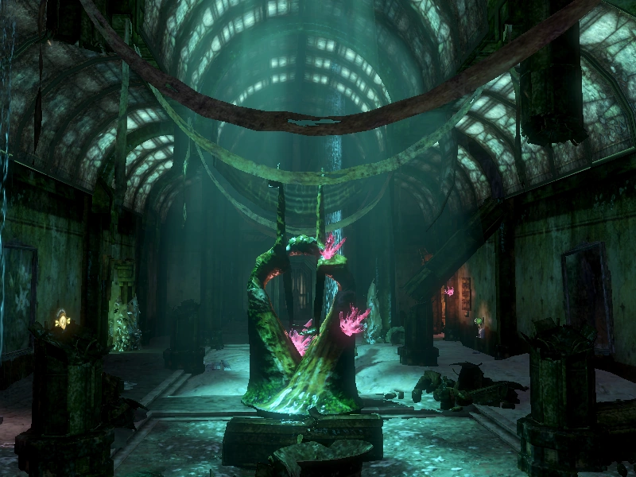
- Un opulento parque artístico, galerías y zona de retiro vacacional financiado por el millonario Stanley Poole.
- Posteriormente fue expropiado y utilizado como base de operaciones por Sofia Lamb y su secta colectivista "La Familia".
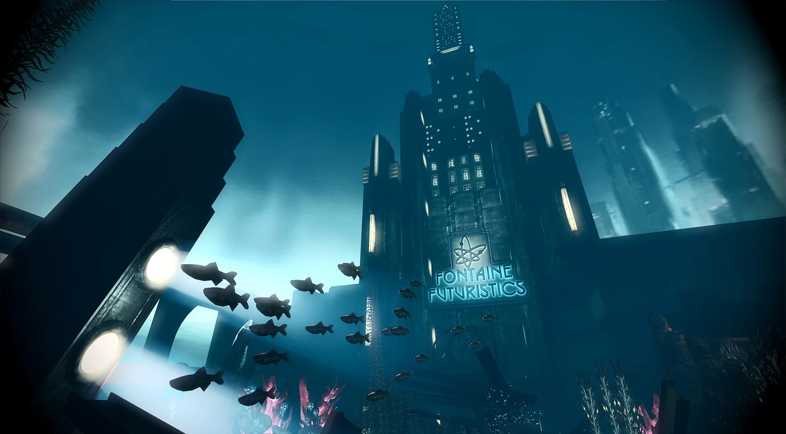
- Las oficinas centrales y laboratorios principales del imperio comercial de Frank Fontaine.
- Oculta las instalaciones secretas de investigación genética avanzada y las oficinas de los científicos principales (como Suchong y Gilbert Alexander).
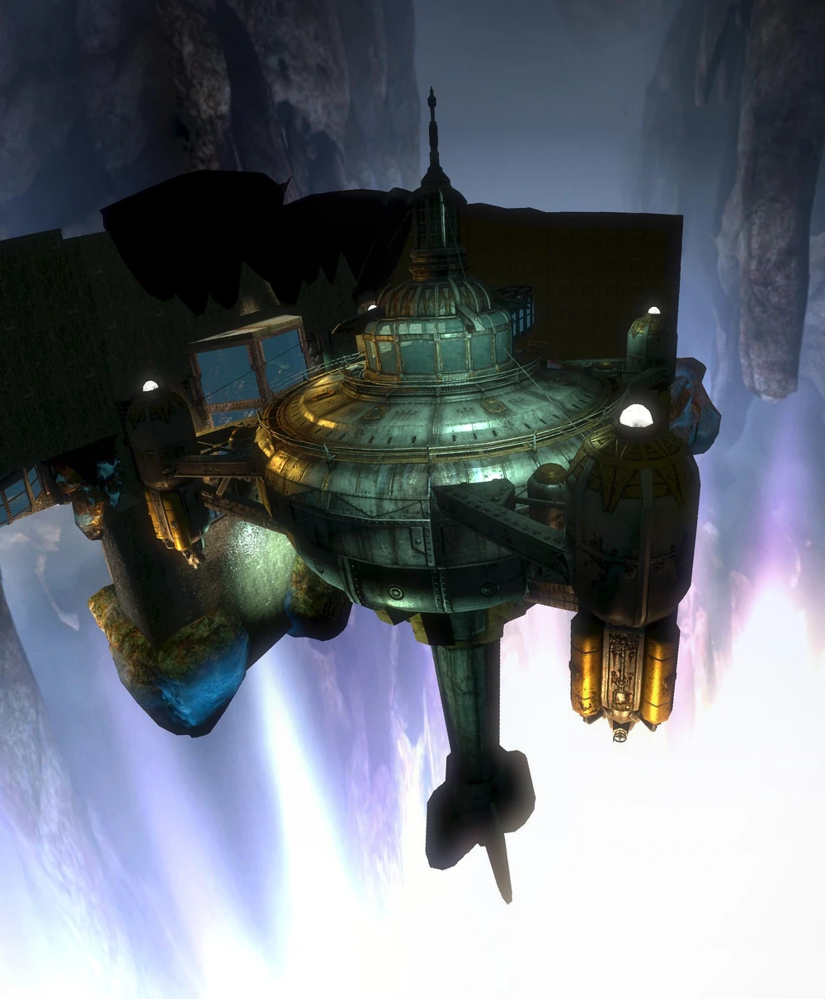
- Una descomunal prisión de máxima seguridad oculta en lo más profundo de una fosa abisal aislada.
- Diseñada en secreto para encerrar permanentemente a los criminales, contrabandistas y enemigos políticos de Andrew Ryan, quienes terminaban siendo usados como cobayas humanas.